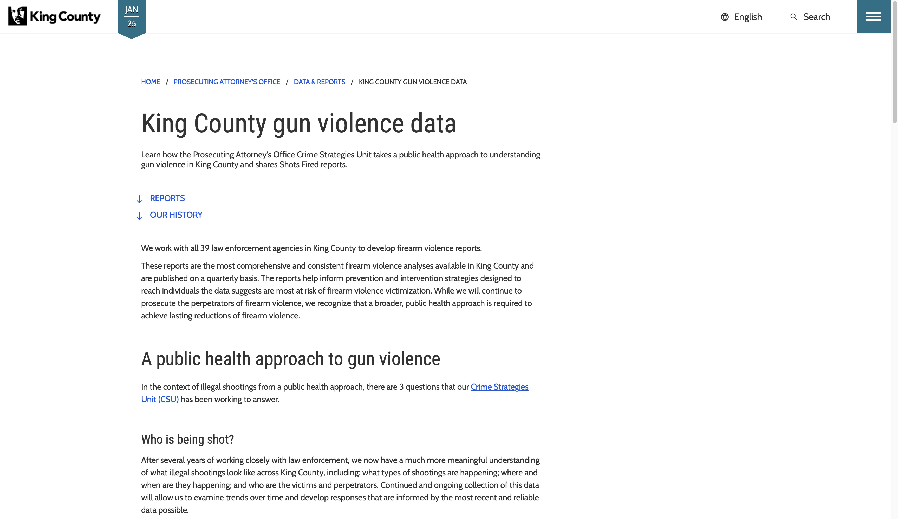

Abstract
Gun Crime in 2010
Gun Crime in 2015
Gun Crime in 2023
See Also
References
King County Gun Violence
The Seattle Times
Alliance For Gun Responsibility
1 / 3

King County Gun Violence Data
2 / 3
The Seattle Times
3 / 3
Alliance For Gun Responsibility
❮
❯